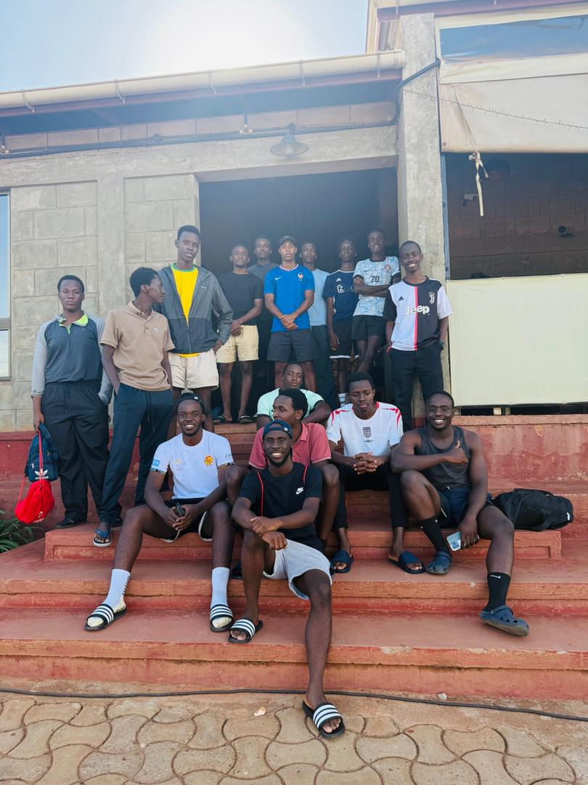
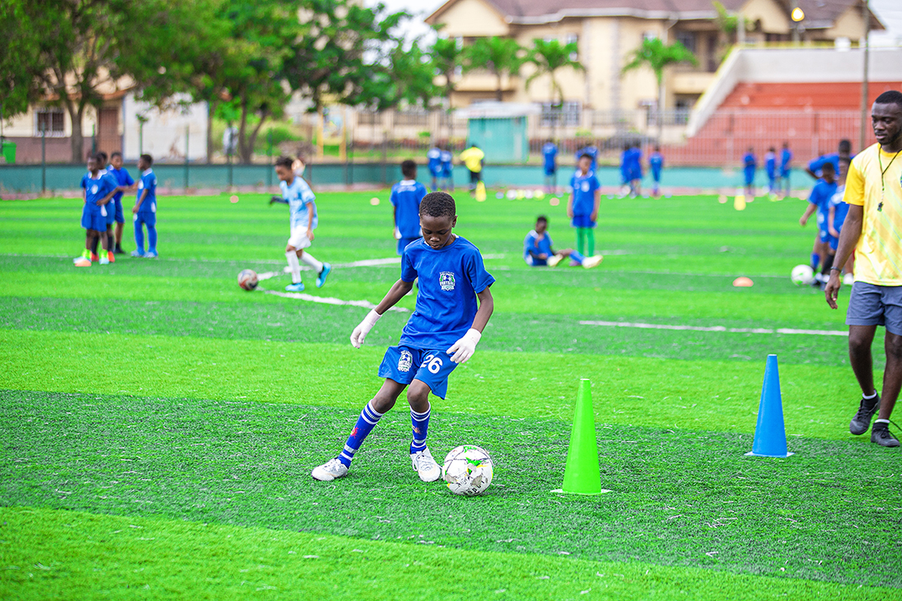

Jambazz FC operates a football academy for age groups Under-9 through to Under-21.
In 2025, the Academy was awarded Category One status following an independent audit by the Startimes Premier League.
The audit process forms part of the League’s monitoring of the Elite Player Performance Plan (EPPP), created in 2012 and designed to increase the quantity and quality of homegrown Ugandan players. The categorisation system permits the best-ranked academies more contact time with young players and ensures their development teams participate in the elite competitions at youth level around Africa. Up to 10 different factors are considered in the grading including productivity rates, training facilities, coaching, welfare and education provisions.
The Academy teams compete in an extensive games programme in the Professional Development Phase (Under-17+). These are split between the Under-18s, Under-19s (for EA competitionS) and Under-21s.
Our Under-21 squad’s league commitments are in 'Regionals competition', which succeeded the Under-21 Football League in the summer of 2020. This increased the age parameters to Under-23 and the introduction of two tiers, with promotion and relegation between the two, but later reverting to an Under-21 competition.

When qualified for it, the Under-19s take part in the FUFA Youth League, a traditional school competition, funded by FUFA, that has a similar format to the UEFA Champions League group stage in European football. Home games are generally played at the respective school's home ground which is usually the school's own pitch .
The competition begins by being split into multiple groups. Jambazz are in the big clubs path, which is identical to the men’s competition until the end of that calendar year, with every team mirroring the first six senior fixtures to be ranked in a single table. The top 32 teams in that table will qualify directly for the next round, with no play-offs.

Our academy teams play a selection of home games at Kyambogo West End pitch.
Are you are a talented footballer? You can submit your information to the Jambazz Academy Player Recruitment Team via our application form here.